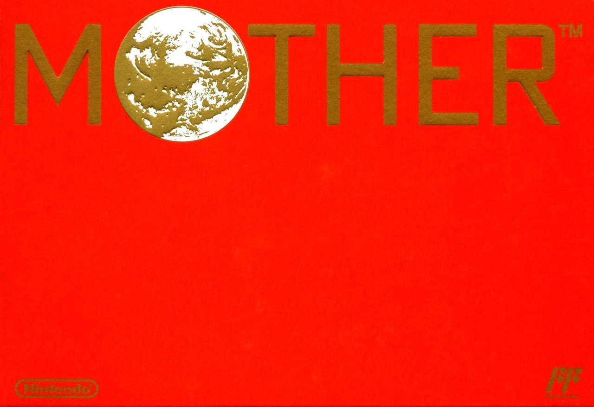
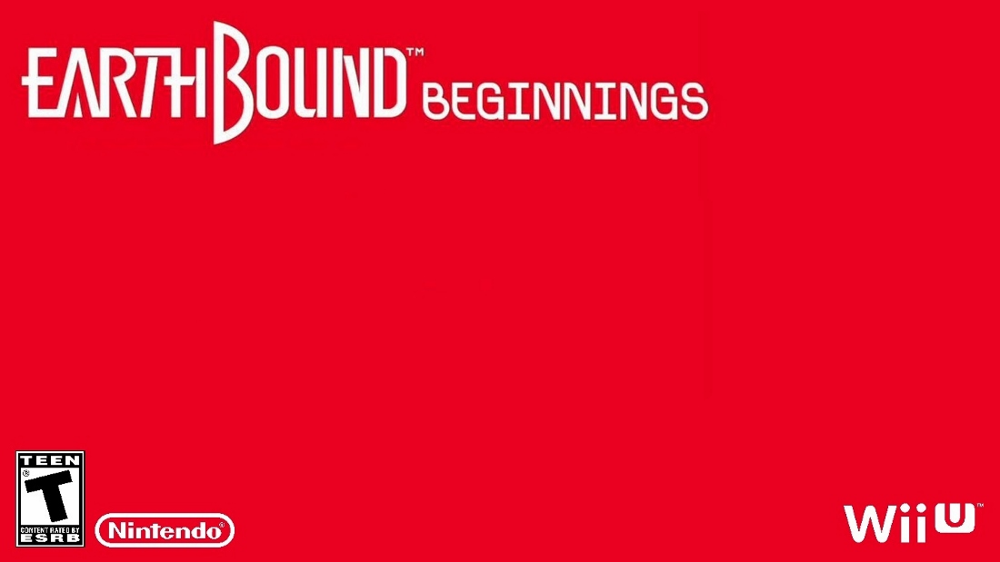

En 1989 sort sur la Famicom au Japon MOTHER, un RPG créé par Shigesato Itoi se démarquant par son histoire, son contexte (le jeu se déroule aux USA durant l'époque contemporaine, tandis que les autres RPG de l'époque se déroulaient principalement à une époque médiévale), mais surtout son humour et son charme. Le jeu fut un succès au Japon, et c'est sans tarder que, dès 1990, Nintendo commanda la traduction du jeu en anglais pour une future localisation en Occident. Elle fut finalisée en 1991, mais la sortie du jeu dut être abandonnée à cause de sa sortie trop tardive pour un jeu NES (la SNES venait de sortir), et le manque d'intérêt pour les RPG de la part des Occidentaux. C’est ainsi que cette localisation restera officiellement dans les archives de Nintendo of America pendant plus de 20 ans. Cette version est cependant plus qu'une simple traduction, c'est une véritable adaptation. Des sprites ont été censurés, des endroits simplifiés et une fin complètement revue et étendue dans l'optique de rendre le jeu un peu moins frustrant pour les joueurs (le premier opus est connu pour sa difficulté très mal équilibrée et injuste), et surtout le titre a changé, celui-ci étant devenu EARTH BOUND (en deux mots, contrairement à EarthBound sur SNES).
Ce n'est qu'en 1998 que le jeu localisé refait surface lorsqu'un collectionneur du nom de Demiforce fait l'acquisition d'une cartouche de l'un des prototypes du jeu. Celle-ci contenait la traduction entière du jeu, et ce prototype contenait sûrement la version du jeu destiné à la vente (ce qui s'avérera être le cas). La ROM fut uploadée sur Internet et s'est rapidement propagée : la modification d'un jeu NES étant relativement simple, les patchs de traductions commencèrent à apparaître, dont un certain patch français réalisé en 2006 par Ridiculle et son équipe pour le site TRAF.
En 2015, le jeu sort enfin des archives de Nintendo, qui le publie sur la console virtuelle de la Wii U sous le nom de EarthBound Beginnings, afin de rester cohérent avec le titre du jeu suivant. C’est la première fois que le jeu dépasse officiellement les frontières Japonaises, et pour l'occasion un nouveau boxart a été réalisé. Absolument rien n’est changé par rapport au prototype de Demiforce, la localisation anglaise, avec ses erreurs et maladresses, reste inchangée. Pour l'occasion, le jeu a une nouvelle